Designing confidence into a complex workflow automation product for Atlassian teams who needed to connect tools, write scripts and automate processes across multiple systems.
The product had power, but users needed confidence.
Stitch-It gave users the ability to connect systems, write scripts, configure workflows and automate tasks. But for a technical product, capability alone is not enough.
Users needed to understand what they were building, how the parts connected, where to start, and whether the workflow was safe to run.
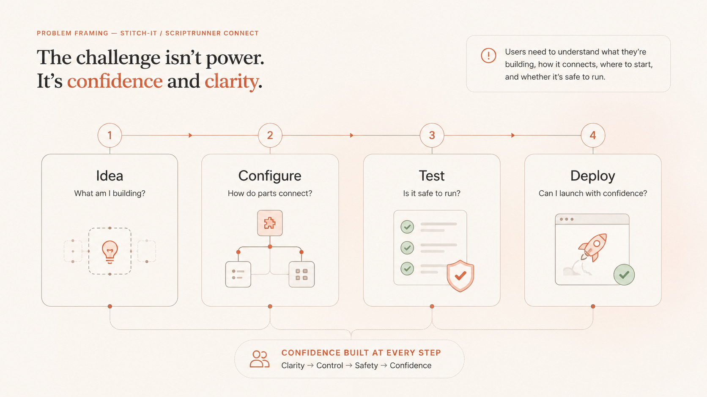
How might we sequence technical complexity so users can start faster, understand the system, test safely and deploy with confidence?
02 / Role
My role was to turn ambiguity into product direction.
I led the product design work from discovery through interface design, working with product, architecture, engineering, QA and marketing.
My contribution focused on defining the user problem, mapping journeys and workflows, exploring product structure, creating wireframes, designing the UI direction and keeping the solution grounded in technical feasibility.
Discovery
Clarified the product opportunity, target users and differentiated value.
Experience strategy
Mapped confidence gaps, activation moments and the product system.
UX/UI design
Created task flows, wireframes and final product interface concepts.
Delivery realism
Worked around technical constraints and engineering feasibility.
03 / Discovery
Before screens, clarify the product.
The first step was to answer three foundational questions: who the product was for, what problem it solved, and why it should exist in the market.
This moved the work away from surface-level UI improvements and towards a clearer product strategy.
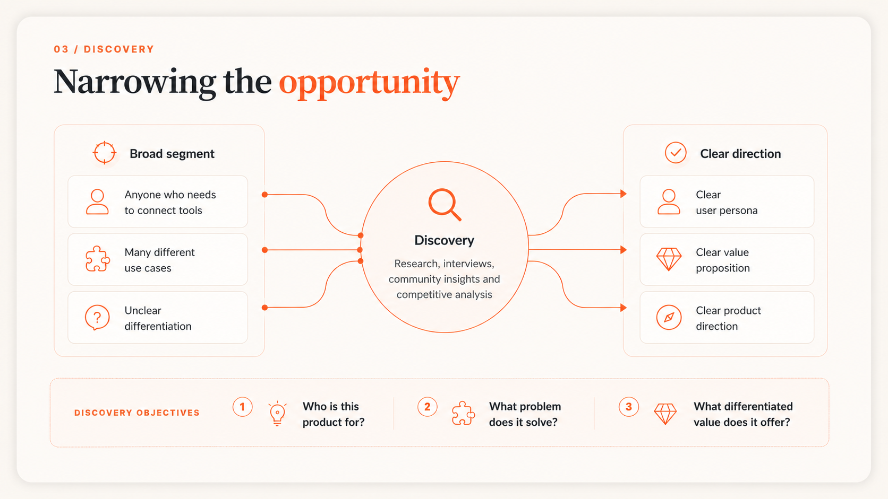
04 / Research
Technical users were not necessarily developers.
Research combined interviews with Atlassian community professionals, community analysis and competitor benchmarking.
A key insight emerged: Stitch-It needed to support technical users who could work with scripts and systems, but who still needed guidance, structure and confidence.
Target users
Atlassian administrators and consultants responsible for automating work across tools.
Core need
Connect systems, automate processes and reduce repetitive manual work.
Key tension
Users needed technical power, but not a blank-canvas developer experience.
Differentiated value
A code-based automation tool usable by non-developer technical users.
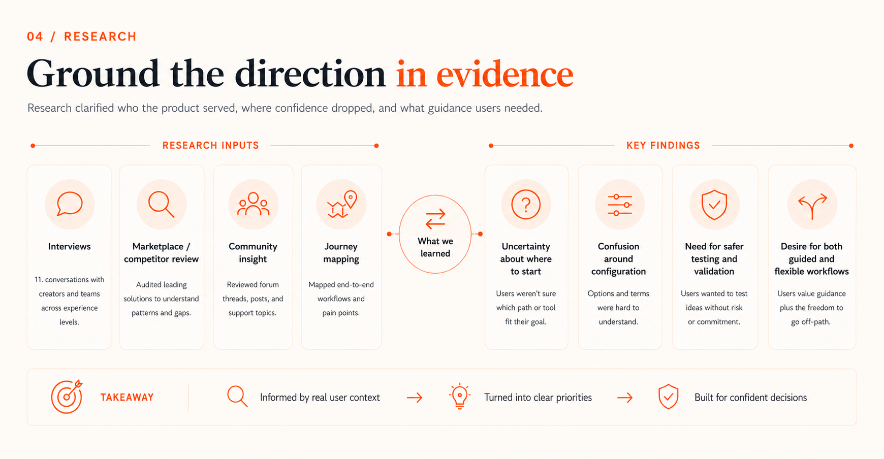
05 / Journey maps
Map where confidence dropped.
The journey maps showed that friction was not limited to individual UI steps. Users lost confidence at moments of uncertainty: understanding the request, choosing the right solution, knowing where to start, configuring the workflow and trusting it before deployment.
This shifted the design direction from “make it simpler” to “make the next step clearer.”
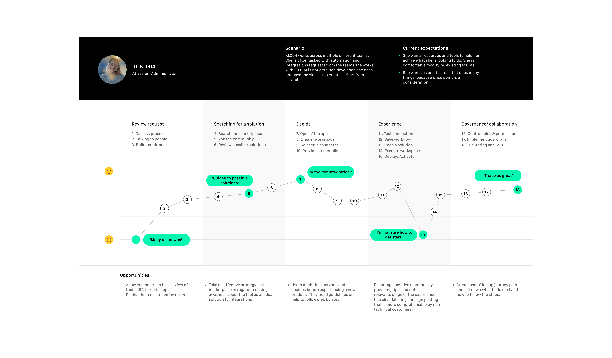
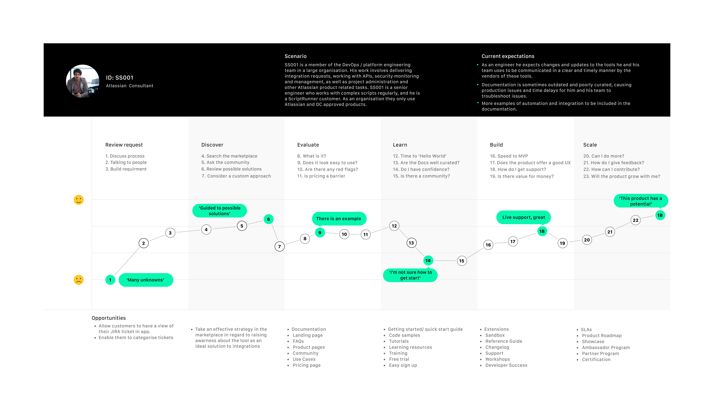
Confidence became the key experience metric. If users could not understand the system or trust the next step, they were unlikely to continue.
06 / System model
Make the complexity visible before simplifying it.
Before moving into UI, I mapped how the product objects related to one another: workspaces, scripts, connections, templates, triggers, schedules, deployment states and help resources.
This created a shared model of the product and helped the team decide how the experience should be structured.
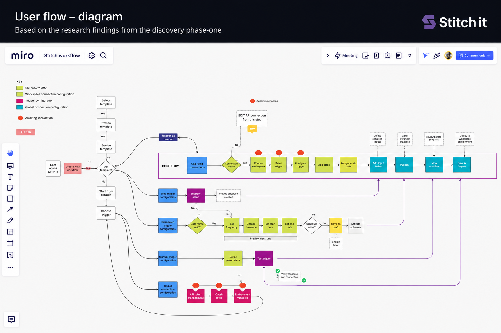
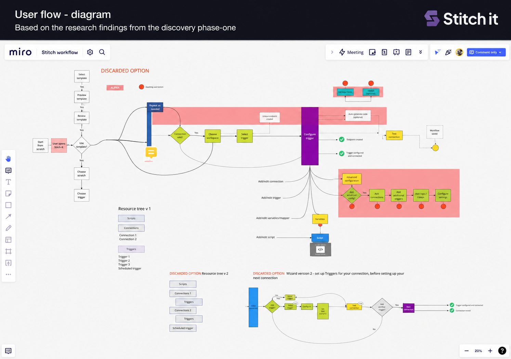
Expose enough of the system model for users to understand what they are building, without forcing them to understand everything upfront.
07 / Activation
Design two routes into the product.
The task flow made the activation strategy clear. New or less confident users needed a guided route through templates. More experienced users needed the option to start from a blank workspace.
The product could not force every user into the same path. It needed to support both confidence and control.
Guided route
For users who know the outcome they want but need help getting started.
Blank workspace
For confident technical users who want flexibility and control from the beginning.
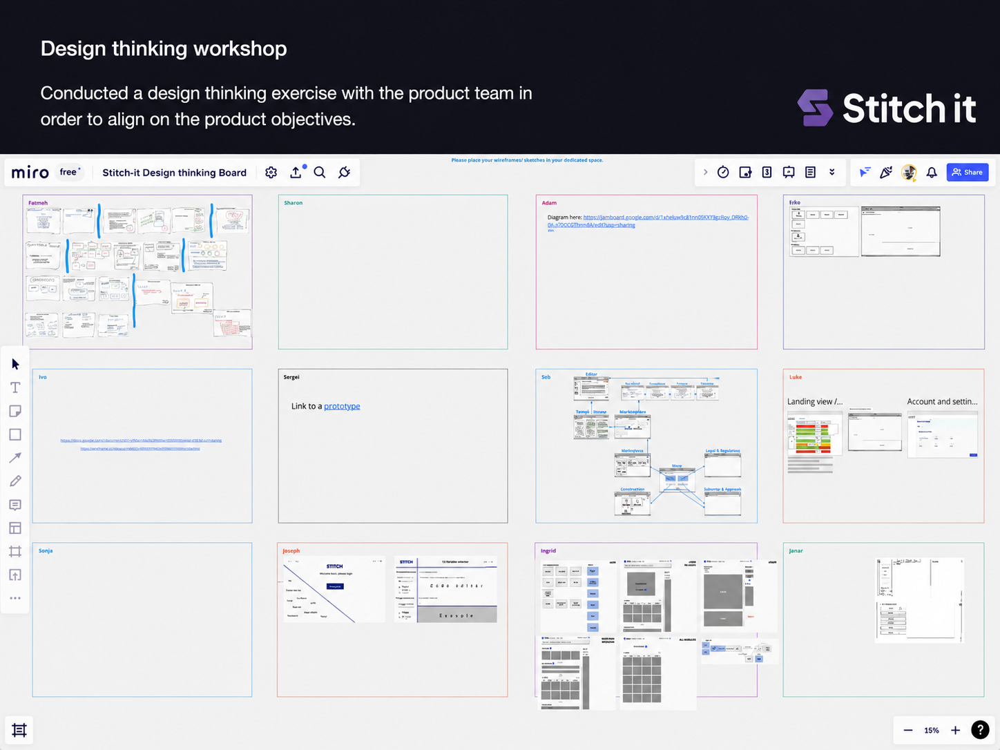
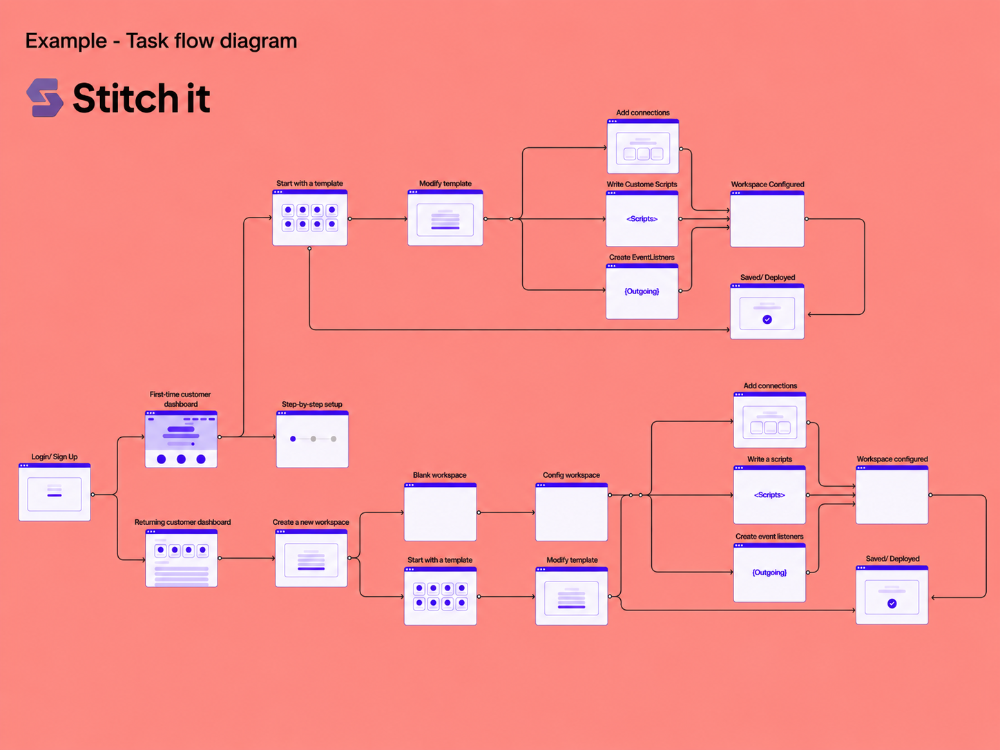
The goal was not to hide complexity. The goal was to sequence it.
08 / Wireframes
Turn the product model into screen structure.
The wireframes translated the task flow into interface structure. I explored how users would browse templates, inspect template detail, set up workspaces, access the editor and understand what to do next.
At this stage, the priority was hierarchy, orientation and flow, not visual polish.
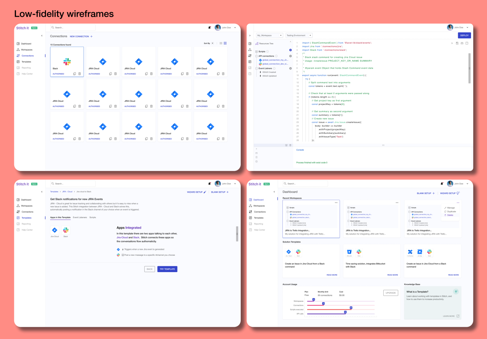
09 / Final UI
A workspace for building, testing and managing automation.
The final UI direction organised the product around recognisable workspace patterns: dashboards, templates, code editing, scheduling, workspaces, connectors and help.
The experience needed to feel technical and capable, but also structured enough for users to know where they were, what they were configuring and what action came next.
10 / Feasibility
Keep design grounded in technical reality.
The product direction had to work alongside a changing technical stack. Engineering was rethinking the underlying architecture, so design decisions needed to stay flexible and implementation-aware.
This meant separating useful existing functionality from legacy constraints, and working with the team to understand what could be carried forward, adapted or redesigned.
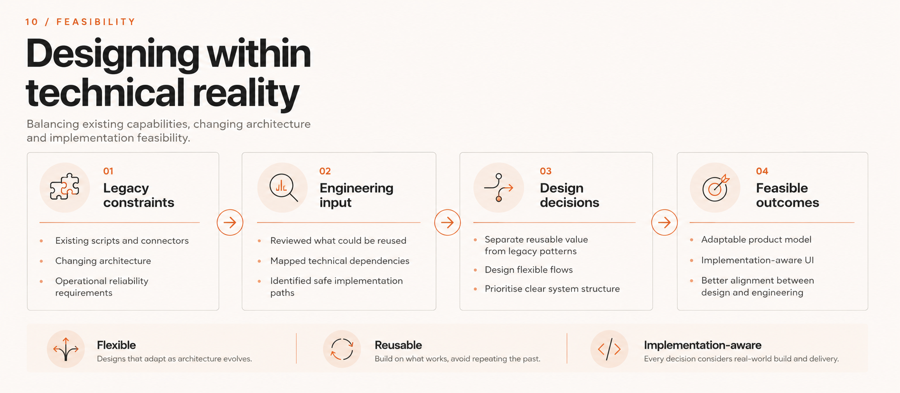
11 / Takeaway
Complexity sequenced into confidence.
The case study reframed Stitch-It as a confidence-building workflow product. Rather than hiding complexity, the design made it more understandable: templates reduced blank-canvas anxiety, workspaces created structure, connectors made integrations visible, the editor preserved flexibility, and help supported users at moments of uncertainty.
Powerful products do not become usable by hiding complexity. They become usable when complexity is sequenced, explained and made safe to act on.